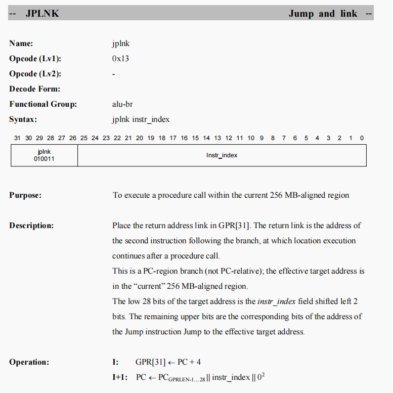

ex_alu
ex_ra_data/ex_rb_data就是alu的两个源操作数，其来自于rf2ex_ra_data_t0/1/2/3，再往前来自于gpr2rf_rs0_data_t0 可以参考MVPGPU-Sim Architecture Manual中微架构流水线一节
疑问一
负数是以补码形式存在，因此是取反+1
input [`MVP_GPGPU_DATA_WIDTH-1 :0] ex_ra_data;
input [`MVP_GPGPU_DATA_WIDTH-1 :0] ex_rb_data;
wire [`MVP_GPGPU_DATA_WIDTH-1:0] arith_add_ina;
//这里相当于是确定alu的操作数
1. abs指令的话ina拿到的就是取绝对值之后的数|ex_ra_data|
2. add, sub, add_si, add_ui指令直接取ex_ra_data
assign arith_add_ina = {32{instr_abs}} & (ex_ra_data[31] ? ~ex_ra_data : ex_ra_data) |
{32{instr_add | instr_sub | instr_add_si | instr_add_ui}} & ex_ra_data;
assign arith_add_inb = {32{instr_abs}} & ({31'h0,ex_ra_data[31]}) |
{32{instr_add}} & ex_rb_data |
{32{instr_add_si}} & simm32 |
{32{instr_add_ui}} & uimm32 |
{32{instr_sub}} & ~ex_rb_data;
疑问二

表示当前PC region的256MB范围内
//mvp_gpgpu_rf_instr_dec 模块会根据op1进行识别当前指令是否是jplnk指令，从而对is2rf_jp_jplnk进行赋值
`define MVP_GPGPU_PC_WIDTH 32
`define MVP_GPGPU_INSTR_WIDTH 32
input [`MVP_GPGPU_INSTR_WIDTH-1:0] is2rf_instr_t1;
input [`MVP_GPGPU_PC_WIDTH-3:0] is2rf_instr_t1_pc;
wire is2rf_jp_jplnk[`MVP_GPGPU_HTHREADS-1:0];
rf2ex_ra_data_t1 <= is2rf_jp_jplnk[1] ? {is2rf_instr_t1_pc[29:26], is2rf_instr_t1[25:0], 2'b0} :
is2rf_ra_by_t1_vld ? (is2rf_ra_by_t1 == `MVP_GPGPU_WB2RF_BYP ? wb2rf_byp_data_t1 : fp2rf_byp_data_t1) : (is2rf_gpr0_t1[0] ? 'h0 : gpr2rf_rs0_data_t1);